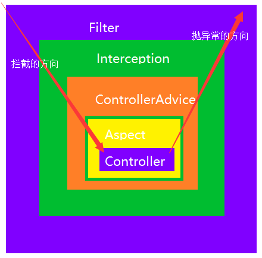

Filter过滤器
过滤器拦截web访问url地址。 严格意义上讲，filter只是适用于web中，依赖于Servlet容器，利用Java的回调机制进行实现。
Interceptor拦截器
拦截器拦截以 .action结尾的url，拦截Action的访问。 Interfactor是基于Java的反射机制（APO思想）进行实现，不依赖Servlet容器。
Spring AOP拦截器
只能拦截Spring管理Bean的访问（业务层Service）。 具体AOP详情参照《Spring AOP详解》
AOP核心概念
1、横切关注点
对哪些方法进行拦截，拦截后怎么处理，这些关注点称之为横切关注点
2、切面（aspect）
类是对物体特征的抽象，切面就是对横切关注点的抽象
3、连接点（joinpoint）
被拦截到的点，因为Spring只支持方法类型的连接点，所以在Spring中连接点指的就是被拦截到的方法，实际上连接点还可以是字段或者构造器
4、切入点（pointcut）
对连接点进行拦截的定义
5、通知（advice）
所谓通知指的就是指拦截到连接点之后要执行的代码，通知分为前置、后置、异常、最终、环绕通知五类
6、目标对象
代理的目标对象
7、织入（weave）
将切面应用到目标对象并导致代理对象创建的过程
8、引入（introduction）
在不修改代码的前提下，引入可以在运行期为类动态地添加一些方法或字段
Spring对AOP的支持
Spring中AOP代理由Spring的IOC容器负责生成、管理，其依赖关系也由IOC容器负责管理。因此，AOP代理可以直接使用容器中的其它bean实例作为目标，这种关系可由IOC容器的依赖注入提供。Spring创建代理的规则为：
1、默认使用Java动态代理来创建AOP代理，这样就可以为任何接口实例创建代理了
2、当需要代理的类不是代理接口的时候，Spring会切换为使用CGLIB代理，也可强制使用CGLIB
AOP编程其实是很简单的事情，纵观AOP编程，程序员只需要参与三个部分：
1、定义普通业务组件
2、定义切入点，一个切入点可能横切多个业务组件
3、定义增强处理，增强处理就是在AOP框架为普通业务组件织入的处理动作
所以进行AOP编程的关键就是定义切入点和定义增强处理，一旦定义了合适的切入点和增强处理，AOP框架将自动生成AOP代理，即：代理对象的方法=增强处理+被代理对象的方法。
Filter与Interceptor联系与区别
- 拦截器是基于java的反射机制，使用代理模式，而过滤器是基于函数回调。
- 拦截器不依赖servlet容器，过滤器依赖于servlet容器。
- 拦截器只能对action起作用，而过滤器可以对几乎所有的请求起作用（可以保护资源）。
- 拦截器可以访问action上下文，堆栈里面的对象，而过滤器不可以。
- 执行顺序：过滤前-拦截前-Action处理-拦截后-过滤后。
最后是一张Filter、Interceptor、aop拦截方向和抛出异常方向图

（全文完）